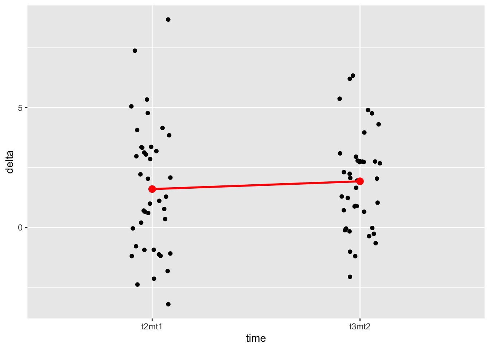

n <- 40 # Anzahl Versuchspersonen
n_items <- 10 # Anzahl Items pro Messung von y
prob <- c(.5, .7, .9) # Lösungswahrscheinlichkeit pro Messzeitpunkt (t1, t2, t3)within-design-analysis1
regression
within-design
researchdesign
fopro
string
Aufgabe
Analysieren Sie die Veränderung in einem längsschnittlichen Experiment (Within-Design).
Im Zuge des Experiments durchliefen alle \(n\) Versuchspersonen 3 Bedingungen. Entsprechend liegen für jede Versuchsperson 3 Messungen vor (y1, y2, y3). Anders gesagt gab es drei Messzeitpunkte (t1, t2, t3), zu denen die abhängige Variable (y) jeweils gemessen wurde Die Messung bestand bei jeder Bedingung aus 10 Items, wobei die Wahrscheinlichkeit, ein Item zu lösen zwischen den Bedingungen unterschiedlich war.
Prüfen Sie die folgende Hypothesen:
- \(y_{t2} - y_{t1} > 0\)
- \(y_{t3} - y_{t2} > 0\)
Gehen Sie von folgenden (hier einfach simulierten) Daten aus:
library(tidyverse)── Attaching core tidyverse packages ──────────────────────── tidyverse 2.0.0 ──
✔ dplyr 1.1.3 ✔ readr 2.1.4
✔ forcats 1.0.0 ✔ stringr 1.5.0
✔ ggplot2 3.4.4 ✔ tibble 3.2.1
✔ lubridate 1.9.3 ✔ tidyr 1.3.0
✔ purrr 1.0.2
── Conflicts ────────────────────────────────────────── tidyverse_conflicts() ──
✖ dplyr::filter() masks stats::filter()
✖ dplyr::lag() masks stats::lag()
ℹ Use the conflicted package (<http://conflicted.r-lib.org/>) to force all conflicts to become errorsset.seed(42)
d <-
tibble(id = 1:n,
y1 = rbinom(n = n, size = n_items, prob = prob[1]),
y2 = rbinom(n = n, size = n_items, prob = prob[2]),
y3 = rbinom(n = n, size = n_items, prob = prob[3]),
g = c(rep(times = n/2, x = "A"), rep(times = n/2, x = "B"))
)
head(d)# A tibble: 6 × 5
id y1 y2 y3 g
<int> <int> <int> <int> <chr>
1 1 7 8 9 A
2 2 7 7 10 A
3 3 4 9 9 A
4 4 7 4 9 A
5 5 6 7 8 A
6 6 5 4 9 A Hinweise:
- Orientieren Sie sich im Übrigen an den allgemeinen Hinweisen des Datenwerks.
Lösung
Pakete starten
library(tidyverse)
library(rstanarm)
library(easystats)Daten aufbereiten
Um die Daten (besser) analysieren zu können, formen wir sie ins “lange Format” um.
d_long <-
d %>%
pivot_longer(cols = c(y1, y2, y3), names_to = "time", values_to = "y")Daten zusammenfassen
d_long %>%
group_by(time) %>%
summarise(y_mean = mean(y),
y_sd = sd(y)) %>%
mutate(delta = y_mean - lag(y_mean))# A tibble: 3 × 4
time y_mean y_sd delta
<chr> <dbl> <dbl> <dbl>
1 y1 5.45 1.74 NA
2 y2 7.05 1.55 1.6
3 y3 8.98 0.891 1.92Daten visualisieren
d_long %>%
ggplot(aes(x = time, y = y)) +
geom_jitter(width = .1) +
stat_summary(fun.y = mean, geom = "point", color = "red", size = 3) +
stat_summary(fun.y = mean, geom = "line", color = "red", linewidth = 1, group = 1) Warning: The `fun.y` argument of `stat_summary()` is deprecated as of ggplot2 3.3.0.
ℹ Please use the `fun` argument instead.
Man sieht, dass der Wert von Y steigt von t1 zu t2 und genauso von t2 zu t3.
Daten transformieren
Man kann auch die Veränderung (das “delta”) zwischen den Messzeitpunkten berechnen, um dann zu prüfen, ob dieses delta dann positiv ist.
d2 <-
d %>%
mutate(t2mt1 = y2 - y1, # t2 *m*inus t1
t3mt2 = y3 - y2, # t3 minus t2
t3mt1 = y3 - y1) # t3 mind t1, die Gesamtveränderung von "Anfang" zu "Ende"d2_long <-
d2 %>%
pivot_longer(cols = c(t2mt1, t3mt2, t3mt1), names_to = "time", values_to = "delta")Daten zusammenfassen
d2_long %>%
group_by(time) %>%
summarise(delta_mean = mean(delta),
delta_sd = sd(delta)) %>%
mutate(delta2 = delta_mean - lag(delta_mean))# A tibble: 3 × 4
time delta_mean delta_sd delta2
<chr> <dbl> <dbl> <dbl>
1 t2mt1 1.6 2.63 NA
2 t3mt1 3.52 1.78 1.92
3 t3mt2 1.92 1.97 -1.6 Wie man sieht, ist das Delta t2mt1 positiv, im Mittelwert steigt also y. Gleiches gilt für t3mt2 und t3mt1.
d2_long %>%
filter(time != "t3mt1") %>%
ggplot(aes(x = time, y = delta)) +
geom_jitter(width = .1) +
stat_summary(fun.y = mean, geom = "point", color = "red", size = 3) +
stat_summary(fun.y = mean, geom = "line", color = "red", linewidth = 1, group = 1) 
Die Veränderungen von t1 zu t2 (t2mt1) sind ähnlich zu denen von t2 zu t3 (t3mt2).
Modell t2mt1
Das entsprechende Regressionsmodell für t2mt2 liefert einfach den Mittelwert des Deltas.
m1_t2mt1 <- lm(t2mt1 ~ 1, data = d2)
coef(m1_t2mt1)(Intercept)
1.6 Ein Bayes-Modell hat den Vorteil, dass es uns einfach zu interpretierende Inferenzstatistik gibt.
m1_bayes <- stan_glm(t2mt1 ~ 1, data = d2, refresh = 0)
coef(m1_bayes)(Intercept)
1.602565 parameters(m1_bayes)Parameter | Median | 95% CI | pd | Rhat | ESS | Prior
--------------------------------------------------------------------------------------
(Intercept) | 1.60 | [0.77, 2.47] | 99.95% | 1.000 | 2449.00 | Normal (1.60 +- 6.57)
Uncertainty intervals (equal-tailed) and p-values (two-tailed) computed
using a MCMC distribution approximation.Mit einer Wahrscheinlichkeit von 100% ist das Delta positiv (laut m1_bayes). Das kann man aus dem Koeffizienten pd ablesen (probability of direction).
m_t3mt2
m_t3mt2_bayes <- stan_glm(t3mt2 ~ 1, data = d2, refresh = 0)
parameters(m_t3mt2_bayes)Parameter | Median | 95% CI | pd | Rhat | ESS | Prior
------------------------------------------------------------------------------------
(Intercept) | 1.93 | [1.32, 2.53] | 100% | 1.001 | 2753.00 | Normal (1.93 +- 4.92)
Uncertainty intervals (equal-tailed) and p-values (two-tailed) computed
using a MCMC distribution approximation.Auch hier ist das Modell sehr meinungsstark: Mit einer Wahrscheinlichkeit von 100% ist der Koeffizient (Veränderung von t2 zu t3) positiv.
Categories:
- regression
- within-design
- researchdesign
- fopro
- string